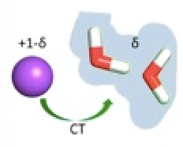
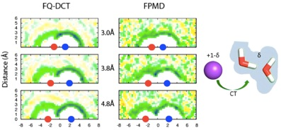
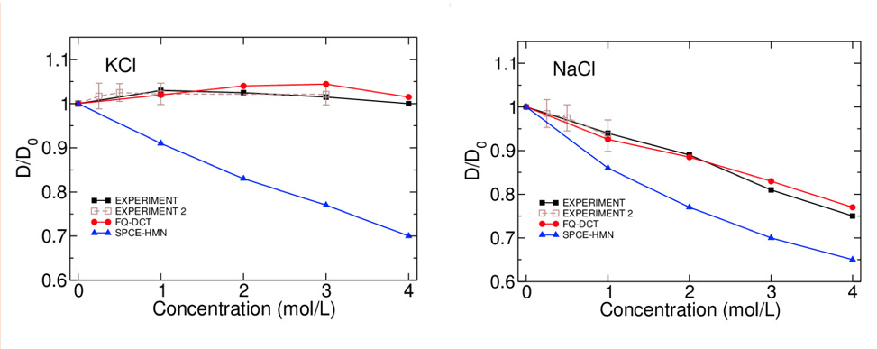
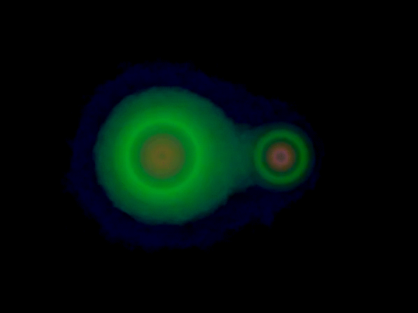
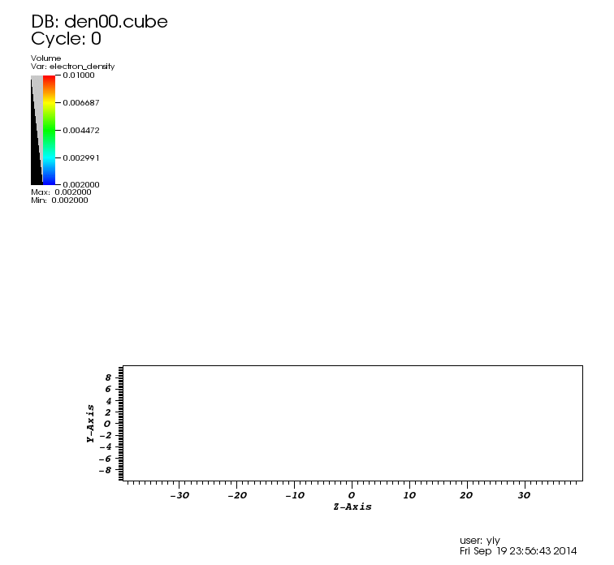

Influence of charge transfer to water dynamics in solutions

*****


#### By including the charge transfer in molecular dynamics simulation, we could accurately describe the water translational diffusive dynamics in aqueous solutions. Role of Charge Transfer in Water Diffusivity in Aqueous Ionic Solutions Y. Yao, Y. Kanai, M. L. Berkowitz [J. Phys. Chem. Lett., 5, 2711 (2014)](http://pubs.acs.org/doi/abs/10.1021/jz501238v) Communication: Modeling of Concentration Dependent Water Diffusivity in Ionic Solutions: Role of Intermolecular Charge Transfer Y. Yao, M. L. Berkowitz, Y. Kanai [J. Chem. Phys. (Comm.) 143, 241101 (2015)](http://aip.scitation.org/doi/abs/10.1063/1.4938083?journalCode=jcp) Free Energy Profile of NaCl in Water: First-Principles Molecular Dynamics with SCAN and B97X-V Exchange–Correlation Functionals Y. Yao, Y. Kanai [J. Chem. Theory Comput. 14, 2, 884-893](https://pubs.acs.org/doi/abs/10.1021/acs.jctc.7b00846) Plane-wave pseudopotential implementation and performance of SCAN meta-GGA exchange-correlation functional for extended systems Y. Yao, Y. Kanai [J. Chem. Phys. 146, 224105 (2017)](https://aip.scitation.org/doi/abs/10.1063/1.4984939)
Applications of Quantum Monte Carlo

*****
Reptation Quantum Monte Carlo Calculation of Charge Transfer: The Na-Cl Dimer
Y. Yao and Y. Kanai
[Chem. Phys. Lett., 618, 236 (2015) - Frontiers Article](http://www.sciencedirect.com/science/article/pii/S0009261414008525)
*****

Excited state electron dynamics
*****